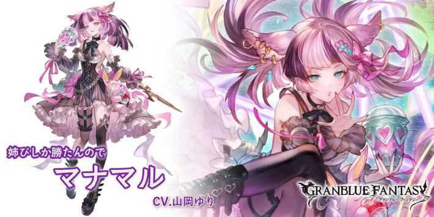
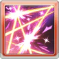
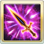

1:攻擊+30%(攻刃加算)
2:防禦+100%
3:必DA
4:傷害上升(上限1萬)
5:技傷上限+30%
如果ヤミマルLv<6，發動一次技能2，ヤミマルLv+1(最多6/無法消除)
如果ヤミマルLv=6，自己獲得無法行動(無法回復)，自己防禦-70%(無法回復)
マナマル
基本資訊
| 定位 | 攻擊 |
| 得意武器 | 短劍 |
| 種族 | 獸耳 |
| CV | 山岡ゆり |
立繪
上限解放前||上限解放後奧義
| ピッコリ･ラビア | |
| 闇屬性4.5倍傷害 自己幽闇的刻印+1 自己傷害上升效果(上限10萬)(2T/含奧義回合) |
主動技能
CD:5 |
ドルミーレ |
| 對敵方隨機目標造成8次闇屬性1倍傷害 敵方全體弱體耐性-10%(累積/最多30%)，持續180秒 自己幽闇的刻印+1 |
|
|  CD:6 |
ピオッジェレッラ |
| 對敵方全體造成闇屬性3倍傷害 敵方全體攻防-5%(累積/最多40%)，持續180秒 •依據自己幽闇的刻印數量增加發動次數(最多6次) |
|
|  CD:5 |
ベガちゃんの激情 |
| 自己奧義值+30% 自己幽闇的刻印+1 自己血量回復30%(最多3000) 自己弱體效果全恢復 自己ヤミマルLv-3 |
被動技能
|
姉ぴしか勝たんので |
| 自己依據幽闇的刻印數量獲得以下強化效果 1:攻擊+30%(攻刃加算) 2:防禦+100% 3:必DA 4:傷害上升(上限1萬) 5:技傷上限+30% |
|
|
激情の守護者 |
| 回合結束時 如果ヤミマルLv<6，發動一次技能2，ヤミマルLv+1(最多6/無法消除) 如果ヤミマルLv=6，自己獲得無法行動(無法回復)，自己防禦-70%(無法回復) |